1 Project organisation
“Remember, you are always collaborating with your future self.”
This course is all about best practices in R. At its foundation, I think this begins with a well organised project that is clean and tidy. We start by talking about basic “hygiene” for your projects and files, before moving on to how to organise your project, and some potential pitfalls.
Remember: your project doesn’t have to be perfectly organised. Instead, we focus on making the next project a little better, each time.
It is worth noting that this section draws from “Workflow” and RStudio, what and why from my course: “quarto for scientists”.
Overview
Duration 60 minutes
Questions
- How should I set up RStudio or Positron?
- What is a file path, and why does
setwd()break things? - What is a project, anyway?
- How does
{here}find my files? - Why should every project have a README?
- What goes wrong when a project is not organised?
- What does “good enough” project organisation look like?
- How should I name my files?
1.1 Set up
Go to course exercises and follow instructions to download course materials.
When you start a new project:
- What is your normal workflow?
- What helps you, what hinders you?
- What do you think you should do?
When you come back to an old project:
- What has made it easier to work on it?
- What makes it difficult?
- Anything you wish you did?
There are no wrong answers! I want to have a discussion, and learn what wins, what makes it hard, what makes it OK.
Let’s talk about some easy-wins in how you set up RStudio and Positron, to make it easier to make things reproducible.
1.1.1 RStudio
We want to go to global options, like so:
Tools → Global Options (or Cmd + , on macOS) → General.
Under Workspace:
- Uncheck Restore .RData into workspace at startup
- Set Save workspace to .RData on exit to Never
Under History:
- Uncheck Always save history (even when not saving .RData)
- Uncheck Remove duplicate entries in history
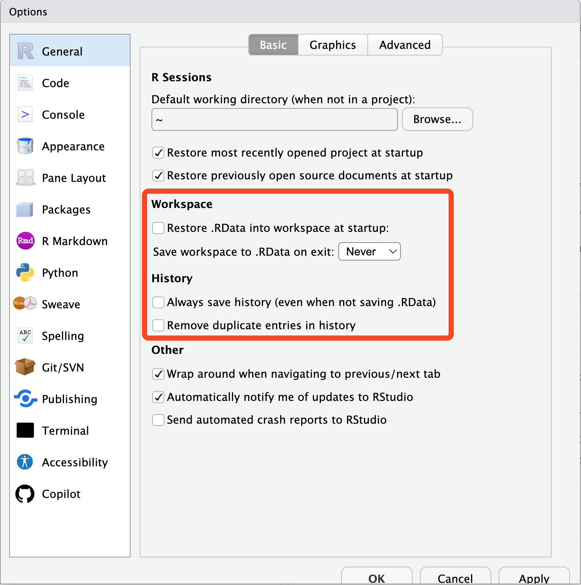
Setting the options so you neither restore nor save your previous session’s work.
This matters for two reasons:
- Reproducibility. You don’t want old objects from your last analysis cluttering your session - and you also don’t want to depend on them, accidentally.
- Privacy. You really do not want private data written into a
.RDatafile on disk. You want to read data in, deliberately, every time.
Your history is the list of commands you have typed. Not saving it means you won’t come to rely on something you typed in a previous session - which is a good habit to build.
You can also do establish these settings via the {usethis} package:
While you are in the settings, two more worth turning on:
- Show line numbers - Easier to say: “The code on line 54”
- Rainbow parentheses - Catch those missing brackets
- Rainbow indentations - Fun indentation markers
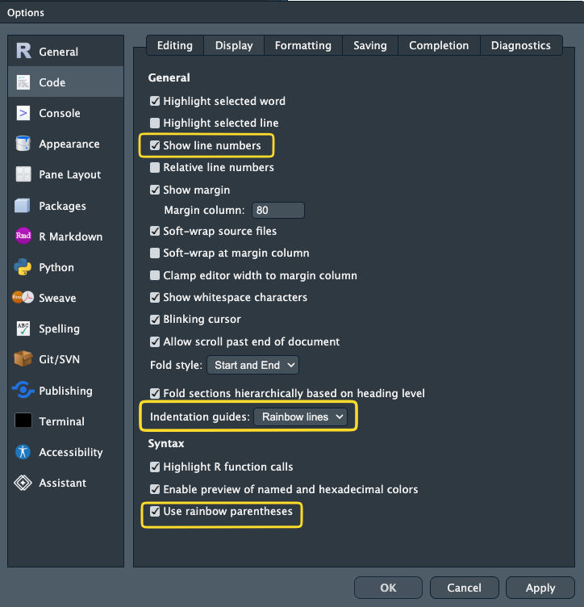
You can restart R with a keyboard shortcut:
Restart R:
Cmd/Ctrl + Shift + F10Your R session will always start from scratch now.
Make a habit of restarting R and starting from scratch.
If your code works from a fresh session, that is a great standard
If it errors on a fresh session, you’ve got a problem to solve (which is overall a good thing to identify!)
There is a really neat feature in RStudio called the “Command Pallete” - it’s kind of like “spotlight” or “search” for any setting in RStudio.
Try opening it using the keyboard shortcut:
- Windows:
Ctrl + Shift + P - Mac:
Cmd + Shift + P
And search for “rainbow”, “rename”, “new”, and just explore!
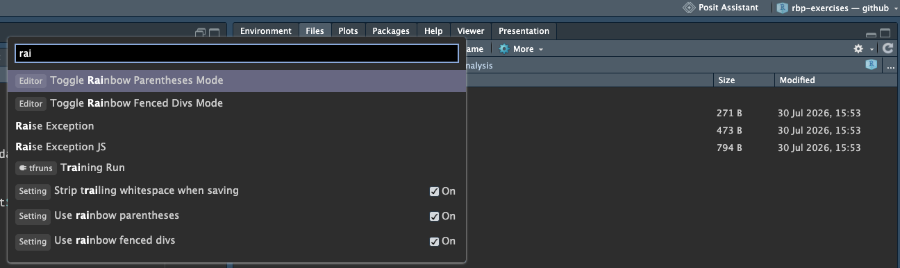
Read more at Posit’s RStudio guide to the Command Palette
1.1.2 Positron
The same settings live under Settings → Extensions → R. The equivalent behaviour is off by default, so there is usually nothing to change - but it is worth looking, so you know where it is.
Positron also has the command palette! The same command as RStudio.
- Windows:
Ctrl + Shift + P - Mac:
Cmd + Shift + P
- Turn off workspace saving using the settings above, or run
usethis::use_blank_slate(). - Restart R with
Cmd/Ctrl + Shift + F10. - Open your most recent analysis script and run it from the top in the clean session.
- Discuss why your work did/did not work
Worth saying upfront - RStudio isn’t going away.
- RStudio
- created in 2011.
- Focus on R, but allows you to write in Python.
- Supports other languages like C, C++.
- It has 15 years of design for use in data analysis. It just works.
- Positron
- Created in 2024.
- A fork of “Visual Studio Code - Open Source”
- Comes with many (most?) of the features of VS Code
- Rich marketplace of extensions
- “polyglot” - works with many languages, not just R
Which to choose? Here are my opinions:
- New to R –> RStudio
- Just using R –> RStudio
- Mostly using R, occasional other language –> RStudio
- Sometimes R, mostly other language –> Positron
- R + frequently other other languages (Python, Rust, C) –> Positron
- Experienced in R and want full control of every setting –> Positron
If you want to read more about the features of Positron and RStudio, see Posit’s article on the topic.
1.2 A common problem: file paths
Before we get into projects, and organising them, I really think it is worthwhile spending a bit of time talking about file paths.
I can almost guarantee that you have run into this problem:
Warning in file(file, "rt"): cannot open file
'my-very-important-data-file-somewhere.csv': No such file or directoryError in `file()`:
! cannot open the connectionThis error is R saying:
I do not know where “my-very-important-data-file-somewhere.csv” is.
There are lots of reasons that R doesn’t know where that file could be!
Chances are you know exactly where the file is, and now you need to get into the mind of R, to understand why it cannot find the file.
We can resolve these errors if we keep our files, paths, and directories ordered. This goes together with a workflow for clearly, and portably letting R know where these are. This practice is sometimes referred to as good file path hygiene.
Let’s define a few of these terms: files, directories, and paths.
1.2.1 Files, directories, paths
Below we show some examples of a folder structure, of directories, and files
Users/ ← Directory
└── njtierney/ ← Directory
└── Desktop/ ← Directory
└── analysis-2026/ ← Directory
├── analysis-2026.Rproj ← File
├── data/ ← Directory
│ └── penguins.csv ← File
├── exploratory-analysis/ ← Directory
│ ├── explore.R ← File
│ ├── eda-document.qmd ← File
│ ├── eda-document.docx ← File
│ └── graph.png ← File
└── README.md ← FileWe can refer to a given location with a “path” - which we refer to as a “file path” or a “directory path” depending on which we are navigating to. Here are some examples of paths for two directories, and two files.
Users/njtierney/Desktop/analysis-2026/- Directory path of “analysis-2026”
Users/njtierney/Desktop/analysis-2026/README.md- File path of “README.md”
Users/njtierney/Desktop/analysis-2026/data- Directory path of “data”
Users/njtierney/Desktop/analysis-2026/data/penguins.csv- File path of “penguins.csv”
A path is just the folders you walk through to get there, joined up with /. Here is that last one again, with every step of it marked:
Users/ ●
└── njtierney/ ●
└── Desktop/ ●
└── analysis-2026/ ●
├── analysis-2026.Rproj
├── data/ ●
│ └── penguins.csv●
├── exploratory-analysis/
│ ├── explore.R
│ ├── eda-document.qmd
│ ├── eda-document.docx
│ └── graph.png
└── README.mdRead the marked lines top to bottom and you have written the path:
/Users/njtierney/Desktop/analysis-2026/data/penguins.csvNothing else in the tree is part of it. That is the whole idea - a path names one route down through the folders, and ignores everything it walks past.
Let’s talk a bit more about files, directories and paths.
1.2.1.1 Files 📄
- Files are something I can open.
- These are all files: “explore.R”, “eda-document.docx”, “graph.png”, “README.md”, “penguins.csv”
- Files have “file extensions”, which are the last characters after a
., and they tell us what kind of file they are:- “explore.R” ends with .R, it is an R script
- “eda-document.docx” is a Microsoft Word Document
- “graph.png” is an image (specifically, a “PNG”)
- “README.md” is a markdown text file.
- “penguins.csv” is a “comma separated values” file
1.2.1.2 Directories 📁
- Also known as folders (files inside a folder)
- A directory contains files
- A directory can also contain directories
1.2.1.3 Paths 🛣️
A path, or “file path”, or “directory path” is the machine-readable directions to where files on your computer live. Kind of like a street address. “Machine readable” just means your computer can read it easily:
- Machine readable:
/Users/njtierney/Desktop/analysis-2026/data/penguins.csv
- Not-quite machine readable:
- “The folder on my desktop named analysis 2026”
So, the file path:
/Users/njtierney/Desktop/analysis-2026/data/penguins.csvDescribes the location of penguins.csv
It might be easier to see this as a tree, or how this file might look in a file explorer on your computer:
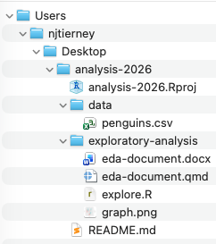
1.2.2 Reading files
So to read CSV in R, you can put the path of penguins.csv in read_csv():
In our diagram, that is this file:
Users/
└── njtierney/
└── Desktop/
└── analysis-2026/
├── analysis-2026.Rproj
├── data/
│ └── penguins.csv ← this is the file being read in
├── exploratory-analysis/
│ ├── explore.R
│ ├── eda-document.qmd
│ ├── eda-document.docx
│ └── graph.png
└── README.mdYou might also note that sometimes in your work, you don’t write down this full path - it is very long! You might do something like:
And this brings us to an important concept - these are two kinds of path:
- absolute paths starts from the root of your computer.
- relative paths starts from wherever you currently are.
So, the code below is using an absolute path:
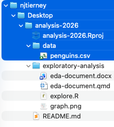
The code below is using a relative path:
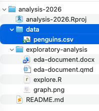
- The relative path looks nice and shorter. But it requires context - it needs to know from where you are reading.
- The absolute path will work from anywhere on your machine. It reads from the lowest folder on your machine.1
But, will the absolute work on your colleagues machine? On your machine in two weeks, next month, next year? No. My absolute path will not work on your machine. Your computer (almost certainly) doesn’t have a /Users/njtierney/ folder. It won’t work on your own machine after you reorganise your folders when you spring clean. It won’t work on the cloud.
- Imagine you see the path
/Users/miles/etc1010/week1/data/health.csv. What are the folders above the filehealth.csv? - Run
getwd(). Where are you? - Look at your most recent analysis script. Find every file path in it. How many are absolute? How many are relative?
A common answer to this is that people will often use relative paths, along with a function setwd():
Let’s talk about why this is not a good idea.
1.2.3 What does setwd() do?
Sometimes the first line of a script looks like this:
This says:
Set my working directory to this specific directory, “analysis-2026”, which is in the folders, Users/njtierney/Desktop.
It means you can then read data using the relative paths we discussed above:
instead of using the absolute path:
So it does have the effect of making the file paths work in your file.
But, it is still a problem, because using setwd() like this creates the same problem you had when you used the absolute path:
- 0% chance of working on someone else’s machine - and this could include you, in six months.
- Means your file is not self-contained or portable. What happens if this folder moves to
/Downloads, or onto another machine?
I used to send files to people like this, and you might have come across this yourself - where an R file comes to you and your colleague says:
Yup, all you need to do is change the
setwd("/Users/njtierney/Desktop/analysis-2026")to point at where you are, then run it
So, to get it working, you have to hand-edit the file path for every machine it lands on.
This is painful. And when you do it all the time, it gets old, fast. There is a better way!

setwd() names a folder that only one machine has, and will not work in future places.This is the heart of the famous line from Jenny Bryan, from her brilliant article, “Project-oriented workflow”- you should read it:
If the first line of your R script is
setwd("C:\Users\jenny\path\that\only\I\have")I will come into your office and SET YOUR COMPUTER ON FIRE 🔥.
Let’s talk about using projects
1.3 Project oriented workflow
When you start on a new idea, a new project, a new paper - anything new - it should start its life as a project. In RStudio that is an .Rproj file; in Positron it is a workspace folder.
A project keeps related work together in the same place. They also do the following:
- Set the working directory to the project directory.
- Start a new session of R.
- Restore previously edited files into your editor tabs.
- Let you have several projects open at once.
This helps keep you sane, because:
- Your projects are independent.
- You can work on different projects at the same time.
- Objects and functions you create in one project won’t affect another.
Projects resolve file path problems, because they automatically set the working directory to the location of the project.
1.4 Get course exercise materials on your machine
Let’s download the course exercise - try running this code:
Which will prompt you to download the repository, https://github.com/njtierney/rbp-exercises, and then open it in an RStudio project.
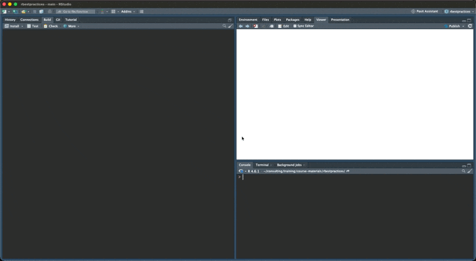
If you have troubles with this (sometimes firewalls can stop you) you can download it from the github page https://github.com/njtierney/rbp-exercises like so:
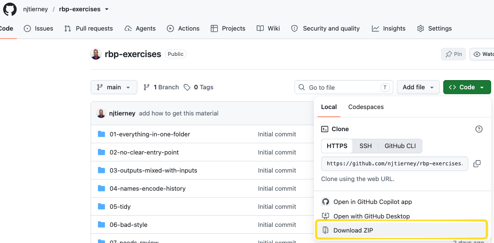
Then, unzip that, and click on the rbp-exercises.Rproj file:
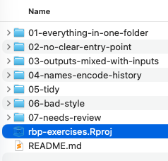
Either use the button in the top right corner, or go:
File → New Project → New Directory → New Project → name your project → Create Project
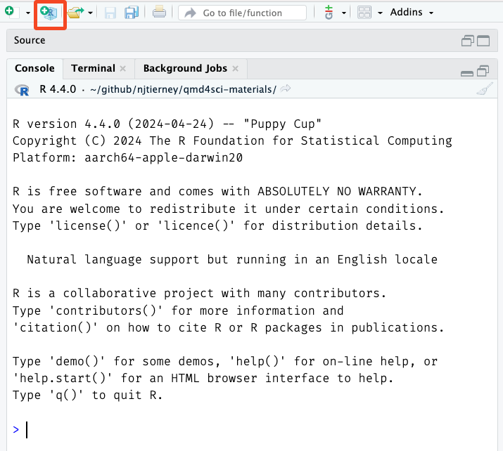
Starting a new project in RStudio.
Then choose New Directory if this is a new folder. If you already have a folder you want to turn into a project, choose Existing Directory instead.
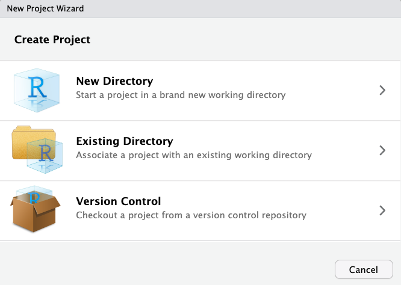
Choosing a new or existing directory.
Then New Project.
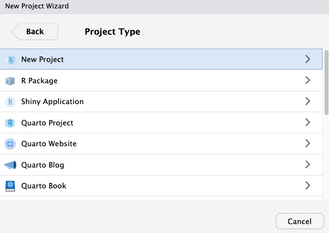
Choosing the project type.
Then name it, and click Create Project.
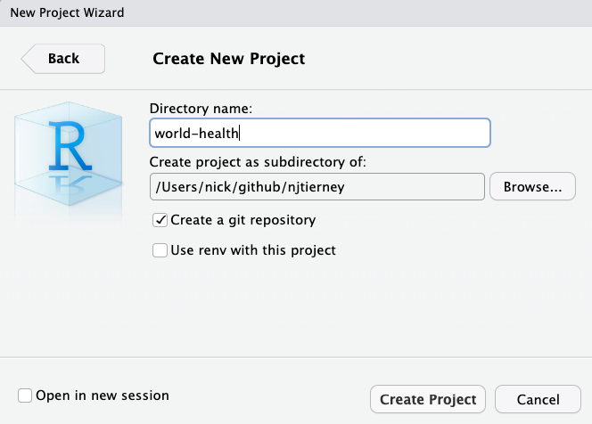
Naming the project.
Positron doesn’t use .Rproj files - that is an RStudio specific file.
The posit team talk about this in their docs: “The R Proj File”.
The gist of this is that Positron does not have Rproj files - you essentially just open a folder and Positron will treat it as a “workspace”.
You can open a folder as a workspace: File -> Open Folder.
If you also want the project to work in RStudio, add an .Rproj file:
Either way, it is worth spending a couple of minutes on the name. Even a few minutes can make a difference. You want to:
- Keep it short.
- Use no spaces.
- Combine words.
For example, I had a project looking at bat calls, so I called it screech, because bats make a screech-y noise. If you are doing global health analysis, maybe it is world-health.
1.5 The {here} package
Although projects resolve most file path problems, in some cases you might have many nested folders. To navigate them reliably you can use the {here} package, which builds the full path from the project root, compactly.
and
Note that these absolute paths will be different on my computer compared to yours - which is exactly what I want you to see.
You can read that here code as:
In the folder
data, there is a file calledpenguins.csv. Can you please give me the full path to that file?
This is handy for a few reasons:
- It makes things completely portable.
- Quarto documents have their own way of looking for files, and this eliminates a whole class of file path pain.
- If you decide not to use projects, you still have code that works on any machine.
So in practice:
works whether the code is called from the top of the project, from inside analysis/, or from a Quarto document being rendered in a subfolder - all places where a plain relative path can quietly mean something different.
- Run
here::here(). Is it where you expected? - Open another rstudio project. Take one absolute path from your most recent script and rewrite it with
here(). - What would have to be true about your working directory for the old version to work?
1.6 Organise your project with a README
When you are working on a project, you are almost certainly going to be returning to it, at some point. When you do, you might look at the code, and wonder:
Who wrote this, and are they insane?
And then you realise that you wrote this.
I think it is worthwhile internalising this saying:
You are always collaborating with your future self.2
I think a really easy win here is to have a README file, which is a plain text file that helps answer:
- Why you did it: what was the goal
- When you did it: Last year, last month?
- What you did: What was run
- How you did it: What was the order you ran things? Which file should I look at first?
- Who did it: Was it just you? Were there many people?
- Where you did it: On your computer? The cloud?
If you can’t answer these questions about a project, how much harder would it be for you to return to it?
I like to think of this as some self-care for your future self.
What I am getting at here is:
A project that is organised is a project that’s more likely to re-run.
A well organised project does not guarantee reproducibility. But, if you can’t tell me which script to run first, then we cannot reproduce an analysis.
A well organised project makes it easier to check, run later, and understand.
A README does not need to be long. Mine are often ten lines. It just has to answer those six questions.
Here is a complete, entirely adequate README, with the question each part is answering marked in the margin:
# Penguin body mass analysis ← WHAT
Fits a model of penguin body mass against flipper
length and species, for the 2026 report to the
department. ← WHY
Run by Nick Tierney. Last run 2026-03-14, on my
laptop, with R 4.5.0. ← WHO, WHEN, WHERE
## How to run ← HOW
Open `penguins.Rproj`, then run the scripts in
`analysis/` in order:
1. `01-clean-data.R`
2. `02-fit-model.R`
3. `03-make-figures.R`
Figures are written to `output/figures/`.
## Data
`data/penguins.csv` is from the {palmerpenguins}
package, saved on 2026-03-14. Do not edit this file.The arrows are not part of the file. They are there to show you that a short README is not a summary of the project - it is six answers, in whatever order suits you.
If you are staring at an empty README.md and do not know where to start, write the six words down the page and fill them in.
Write the README first, if you can, and return to it often.
You can have more than one README. A short one inside data-raw/ explaining where those files came from is often the most valuable file in the whole project.
And it’s worth recording when you obtained the data - just noting the data, and also what versions of software you used, so that someone later, including you, can reconstruct similar conditions.
You can get the dependencies in an R project with:
Everything in this lesson is framed around your future self. But the same structure is what makes your work usable by anyone else, and that matters most at publication.
Karthik Ram and I wrote about this in Common sense approaches to sharing tabular data alongside publication (Patterns, 2021). The argument, in short, is that depositing data doesn’t make it reusable. The reusable part is mundane and structural:
- A README that says who, what, when, where and how.
- Both the raw data and the analysis-ready data, each in its own folder.
- The cleaning script that turns one into the other, kept with the raw data.
- Metadata describing each variable: its name, what it means, and its type. Enough to stop someone reading a gene sequence as a date.
- A licence. We recommend CC0.
If you organise your project this way from the start, you don’t have to do anything special at submission. You’re already most of the way there.
That’s the real payoff, and it’s why I’d rather you set this up now than tidy it up later.
1.7 Pitfalls of organisation
There are so many ways to organise a project. While there isn’t a single right way, there are definitely better and worse ways. A key takeaway from today I want you to remember is:
Your project might not be perfectly organised, but it should be possible for someone to understand how it is structured, and what to run first.
There are a few patterns that make picking up a new project hard. I am guilty of all of these. I am not judging you if these are how you work now. What I am saying is there are some ways you can improve.
You can see these patterns in the course exercises you downloaded earlier: https://github.com/njtierney/rbp-exercises
We will quickly move through these now.
1.7.1 Everything in one folder
01-everything-in-one-folder/
├── Rplot.png
├── Screen Shot 2026-03-14 at 10.23.45 am.png
├── Untitled1.R
├── analysis.R
├── figure1.png
├── notes.txt
├── penguins.csv
├── plot_stuff.R
├── report draft.docx
└── results.csvNotice the R scripts, the data, the figures, a Word document, a screenshot, and Untitled1.R, are all flat - they are in the same folder. This works until there are more than about fifteen files, at which point finding anything becomes a search problem.
I think about this as like a grocery list: If my shopping list is only 5 items long, it might not impact me when I go to the shops:
- Milk
- Yoghurt
- Muesli
- Bananas
- Muesli bars
But if I’m buying a bunch of food for the week, some meal prep, and a few other bits and pieces, if I don’t order the shopping list, and group the similar parts together, I am creating work for myself.
- Milk
- Onion powder
- Red capsicum
- Yoghurt
- Muesli
- Bananas
- Muesli bars
- Tomato paste
- Ginger
- Coriander
- Garlic
- Lemongrass
- Coconut milk
- Chicken thighs
- Limes
- Eggplants
- Snow peas
- Thai basil
- 500g beef mince
- Basmati rice
- Produce
- Bananas
- Ginger
- Garlic
- Lemongrass
- Limes
- Thai basil
- Coriander
- Eggplants
- Red capsicum
- Snow peas
- Dairy
- Milk
- Yoghurt
- Meat
- Chicken thighs
- 500g beef mince
- Pantry
- Muesli
- Muesli bars
- Basmati rice
- Coconut milk
- Tomato paste
- Onion powder
In this instance, I would recommend grouping the files into folders
Flat directory structure can make it hard to group things to understand how they are related.
01-everything-in-one-folder/
├── Rplot.png
├── Screen Shot 2026-03-14 at 10.23.45 am.png
├── Untitled1.R
├── analysis.R
├── figure1.png
├── notes.txt
├── penguins.csv
├── plot_stuff.R
├── report draft.docx
└── results.csvPut similar things into folders (directories) that give them structure.
01-everything-in-one-folder/
├── internals/
│ └── notes.txt
├── plots/
│ ├── Rplot.png
│ ├── Screen Shot 2026-03-14 at 10.23.45 am.png
│ └── figure1.png
├── scripts/
│ ├── Untitled1.R
│ ├── analysis.R
│ └── plot_stuff.R
├── data/
│ └── penguins.csv
└── outputs/
├── report draft.docx
└── results.csv1.7.2 No clear entry point
02-no-clear-entry-point/
├── analysis.R
├── clean.R
├── data.csv
├── do_it.R
├── final.R
├── helpers.R
├── main.R
├── model.R
├── plots.R
├── run.R
├── script.R
└── tests.RThere are eleven .R files and no way to tell which one runs first. If the only way to know the order they are run in, is only in your head, the project is not reproducible. It is a performance that only you can give.
When task order is required, but it is not written down, you cannot reproduce the task.
showing the above file preview
02-no-clear-entry-point/
├── analysis.R
├── clean.R
├── data.csv
├── do_it.R
├── final.R
├── helpers.R
├── main.R
├── model.R
├── plots.R
├── run.R
├── script.R
└── tests.REncode the task order in another file, such as “00-run-first.R” - adding numbers to the start of the file will mean they sort the files in order. If files aren’t useful anymore, you can delete them, or you can put them in an “attic” folder, if you aren’t ready to let them go.
02-no-clear-entry-point/
├── 00-run-first.R
├── 01-helpers.R
├── 02-clean.R
├── 03-analysis.R
├── 04-model.R
├── 05-plots.R
├── 06-tests.R
├── 07-final.R
└── data/
└── data.csv
└── attic/
├── xx-main.R
├── xx-do_it.R
└── xx-script.R1.7.3 File names encode history, not content
04-names-encode-history/
├── analysis.R
├── analysis2.R
├── analysis_final.R
├── analysis_final_USE_THIS_ONE.R
├── analysis_final_USE_THIS_ONE_v2 (nick edits).R
├── analysis_final_USE_THIS_ONE_v2.R
├── analysis_final_v2.R
└── penguins.csvThe names of these files tell a story: the analysis progressed, things changed, and there were concerns about knowing which version worked, and being able to go back and change things. You can think of this as using “track changes” in a word document. This is a kind of version control. But naming the files in order to track versions creates problems, and it is better solved with specific version control software, such as git. I cover this in another course, “Introduction to git and github”.
There are multiples of the same file with names that tell you their version, rather than their task.
showing the above file preview
04-names-encode-history/
├── analysis.R
├── analysis2.R
├── analysis_final.R
├── analysis_final_USE_THIS_ONE.R
├── analysis_final_USE_THIS_ONE_v2 (nick edits).R
├── analysis_final_USE_THIS_ONE_v2.R
├── analysis_final_v2.R
└── penguins.csvName the files for what they do, not when you made them3. If you aren’t ready to let them go, use the “attic” folder.
04-names-encode-history/
├── analysis.R
└── data/
└── penguins.csv
└── attic
├── analysis2.R
├── analysis_final.R
├── analysis_final_USE_THIS_ONE.R
├── analysis_final_USE_THIS_ONE_v2 (nick edits).R
├── analysis_final_USE_THIS_ONE_v2.R
└── analysis_final_v2.R1.7.4 Editing raw data in place
You might have some data provided for analysis and there might be instructions to go through by hand to fix typos, or add new data. You should not make hand edits to the file, as this changes the history and increases the chances of a non-repeatable change. You can make a critical error by accidentally hitting the wrong key. From experience, having accidentally sorted a single column in an excel sheet and not realising this, I essentially turned a meaningful data source into random noise.
- The problem: Hand editing raw data
- The solution: Raw data should be read-only, and changes that happen to it happen with code, and are saved to separate outputs.
The way you actually enforce that is with two folders. data-raw/ holds the file exactly as it arrived and nothing ever writes to it. data/ holds the version your analysis reads, and it is produced by a script.
One file, edited by hand, and no way to tell what you changed or when.
04-editing-raw-data/
├── analysis.R
└── penguin-survey.xlsx ← opened in Excel, typos fixed by hand04-editing-raw-data/
├── data-raw/
│ ├── penguin-survey.xlsx ← exactly as it arrived. Read only.
│ ├── clean-penguins.R ← every fix you would have made by hand
│ └── README.md ← where it came from, and when
├── data/
│ └── penguins.csv ← written by clean-penguins.R
└── analysis.R ← reads data/, never the xlsxEvery correction is now a line of code. You can read it, re-run it, and disagree with it in six months. The typo fix that used to be a keystroke nobody saw is now mutate(species = if_else(species == "Adelei", "Adelie", species)), sitting in a script with the raw file beside it.
And it survives the thing that hand editing cannot: the data arriving again next year, slightly different. Re-run the script.
1.7.5 Outputs mixed in with inputs
03-outputs-mixed-with-inputs/
├── 01-clean.R
├── 02-model.R
├── cleaned_data.csv
├── fig-mass-flipper.png
├── fig-species.png
├── model_fit.rds
├── penguins.csv
└── raw survey data.xlsxIn this case, figures, model outputs, and cleaned data sit in the same folder as your raw data and scripts. You cannot tell at a glance what is necessary for your analysis, and what is produced as output by your analysis. This means you don’t have a clear sense of how to reproduce files, or where edits can be safely made. A good test: could I delete this folder entirely and regenerate it by running my code? If yes, it is an output, and it should live somewhere that says so.
- The problem: Not knowing what is inputs vs outputs impacts reproducibility.
- The solution: Clearly label inputs and outputs - potentially put your outputs in an “outputs” folder. Or have a file that describes the inputs and outputs, such as a README, or an analysis script.
Open a project you worked on more than six months ago.
- Can you tell, within thirty seconds, which script to run first?
- Which files could you delete and regenerate from code?
- Which files could you not regenerate? Those are the ones that actually matter - are they backed up?
1.8 “Good enough” project organisation
There is no single correct structure, but there is a common shape that I think gives you a great starting place:
my-project/
|-- my-project.Rproj
|-- README.md
|-- data-raw/
| |-- penguins-raw.csv
| `-- clean-penguins.R
| `-- README.md
|-- data/
| `-- penguins.csv
|-- R/
| `-- functions.R
|-- analysis/
| |-- 01-clean-data.R
| |-- 02-fit-model.R
| `-- 03-make-figures.R
`-- output/
|-- figures/
`-- models/- README - as discussed at the start - this guides the reader through just what this is.
data-raw/holds the raw data, exactly as you received it, along with the script that cleans it. Raw data is read-only, so nothing ever writes here, and you never edit it by hand. Keeping the cleaning script next to the raw data means the two never drift apart. Note that there is a README.md in data-raw/ to tell you a bit more about the data. You can have more than one README.data/holds the analysis-ready data that the cleaning script produces. This is the version your analysis actually reads.R/holds functions. Code that gets used, not code that gets run. We will spend a whole lesson on this.analysis/holds scripts that get run, in order. The numbering is doing real work: it tells your future self the entry point without needing a README.output/holds things you can delete. Anything in here can be regenerated by re-running the analysis.
If your project is small, collapse this. Three files in a flat folder with a README is a perfectly good project structure. You are not aiming for folders. You are aiming for a place where each kind of thing goes, and for being consistent about it.
Sketch the folder structure for a project you are working on right now. Don’t create it yet - just write it out.
- Where does raw data go?
- Where do the things you can regenerate go?
- Where does someone start reading?
1.9 How to name files
Naming is hard. We will come back to this throughout the course.
Having this “good enough” folder structure tells you where things go, but it does not tell you what to name them. So let’s talk about that.
Some especially good pieces of advice:
- Machine readable. No spaces, no punctuation beyond
-and_, and stick to one case.01-clean-data.R, not01 Clean Data (final).R. - Human readable. The name should say what the file does.
clean-penguins.Rtells you something.script2.Rdoes not. - Sorts sensibly. Numbers at the front, zero padded, so
01,02,10stay in order. Dates asYYYY-MM-DD, which sorts correctly for free.
That last one is the sneaky one. If your file names sort properly, your file explorer does your project organisation for you, and you get the running order without needing a README.
If you want to read more about this, I suggest:
- The files chapter of the Tidyverse style guide. It is short, and it is worth your time reading.
- Jenny Bryan’s talk, “How to name files like a normie”
Look at the file names in your most recent project.
- How many have spaces in them?
- If you sorted them alphabetically, would the order mean anything?
- Pick the worst named file and give it a better name.
1.10 Make your project “good enough”
I want to be clear that the goal here is good enough, not perfect. This phrasing comes from a paper I recommend to everyone, “Good enough practices in scientific computing” by Wilson et al.
The principles I would hold you to:
- Put each project in its own folder, with its own
.Rprojfile. - Treat raw data as read-only. Never edit it by hand.
- Treat generated output as disposable. If you can’t delete it and get it back, it isn’t really output.
- Use relative paths. Never
setwd(). - Name files so a stranger can guess what they do.
- Make the running order obvious, with numbered scripts or a README.
- Write a README.
That is the whole list. If you do those seven things, you are organised enough, and the remaining effort is better spent on the analysis itself.
One more thing:
Don’t reorganise everything tonight.
Apply this to your next project. Retrofitting a large existing project is a big job, and can be a very effective way to talk yourself out of the whole idea. Start clean, once, and let the habit build.
Go through the seven principles above and score your most recent project out of seven.
Pick the single one that would have saved you the most time, and write down what you would have to change to fix it.
Summary
- You are always collaborating with your future self.
- A file path is the address of a file; absolute paths only work on one machine.
- Use one folder and one
.Rprojper project, and relative paths within it. here::here()builds paths from the project root, wherever the code is called from.- Raw data is read-only; output is disposable.
- Make the running order obvious.
- Write a README that says what, how, and where from.
- Start R with a blank slate, and restart often.
Next, we will look at what happens inside those files: how code is styled, and why consistency makes code readable.
Links
- “Workflow”
- RStudio, what and why
- “quarto for scientists”
- course exercises
- Posit’s RStudio guide to the Command Palette
- “Visual Studio Code - Open Source”
- Posit’s article on the topic
- “PNG”
- “Project-oriented workflow”
- https://github.com/njtierney/rbp-exercises
- “The R Proj File”
- {here}
- Common sense approaches to sharing tabular data alongside publication
- “Introduction to git and github”
- git
- The files chapter of the Tidyverse style guide
- “How to name files like a normie”
- “Good enough practices in scientific computing”
That lowest folder is called the root - the one folder that contains everything else. On macOS and Linux it is written
/, so an absolute path always starts with a/. On Windows it is usuallyC:\. Your own home folder sits just inside it, at/Users/yournameon macOS or/home/yournameon Linux, and has a shorthand:~. So~/Desktop/analysis-2026and/Users/njtierney/Desktop/analysis-2026are the same place, on my machine only.↩︎I swear I heard it from someone else, but I cannot find the source↩︎
Ideally, you would use a version control system like git. Out of scope for this course.↩︎